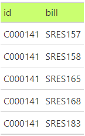

library(ERDbuilder)
library(incidentally)
library(janitor)
library(dplyr)
library(tidyr)
library(tibble)
library(gt)
# https://cran.r-project.org/web/packages/incidentally/vignettes/congress.html
I <- incidence.from.congress(
session = 115,
types = c("sres"),
areas = c("All"),
format = "data",
narrative = TRUE)
legislators_tbl <- I$legislator |> as_tibble()
bills_tbl <- I$bills |> as_tibble() |> clean_names()
##
cosponsors_tbl <-
I$matrix |>
as.data.frame() |>
rownames_to_column(var = "name") |>
pivot_longer(-name, names_to = "bill", values_to = "sponsored") |>
filter(sponsored == 1) |>
left_join(legislators_tbl, by = join_by(name)) |>
select(id, bill)
my_gt <- function(df) {
df |>
gt() |>
tab_style(
style = cell_fill(color = "darkolivegreen1"),
locations = cells_column_labels()
)
}
cosponsors_tbl |> head(5) |> my_gt()
legislators_tbl |> head(5) |> my_gt()
bills_tbl |> head(5) |> my_gt()
gt_group(
cosponsors_tbl |> head(5) |> my_gt(),
legislators_tbl |> head(5) |> my_gt(),
bills_tbl |> head(5) |> my_gt()
)
relationships <- list(
Cosponsors = list(
Legislators = list(id = "id", relationship = c(">0", "||")),
Bills = list(bill = "bill", relationship = c(">|", "||"))
)
)
erd <- create_erd(
list(
Cosponsors = cosponsors_tbl,
Legislators = legislators_tbl,
Bills = bills_tbl
),
relationships
)
render_erd(erd, label_distance = 0)
### Legislators -> Cosponsors -> Bills
relationships <- list(
Legislators = list(
Cosponsors = list(id = "id", relationship = c("||", "0<"))
),
Cosponsors = list(
Bills = list(bill = "bill", relationship = c(">|", "||"))
)
)
erd <- create_erd(
list(
Cosponsors = cosponsors_tbl,
Legislators = legislators_tbl,
Bills = bills_tbl
),
relationships
)
render_erd(erd, label_distance = 0)
### Bills -> Cosponsors -> Legislators
relationships <- list(
Bills = list(
Cosponsors = list(bill = "bill", relationship = c("||", "|<"))
),
Cosponsors = list(
Legislators = list(id = "id", relationship = c(">0", "||"))
)
)
erd <- create_erd(
list(
Cosponsors = cosponsors_tbl,
Legislators = legislators_tbl,
Bills = bills_tbl
),
relationships
)
render_erd(erd, label_distance = 0)